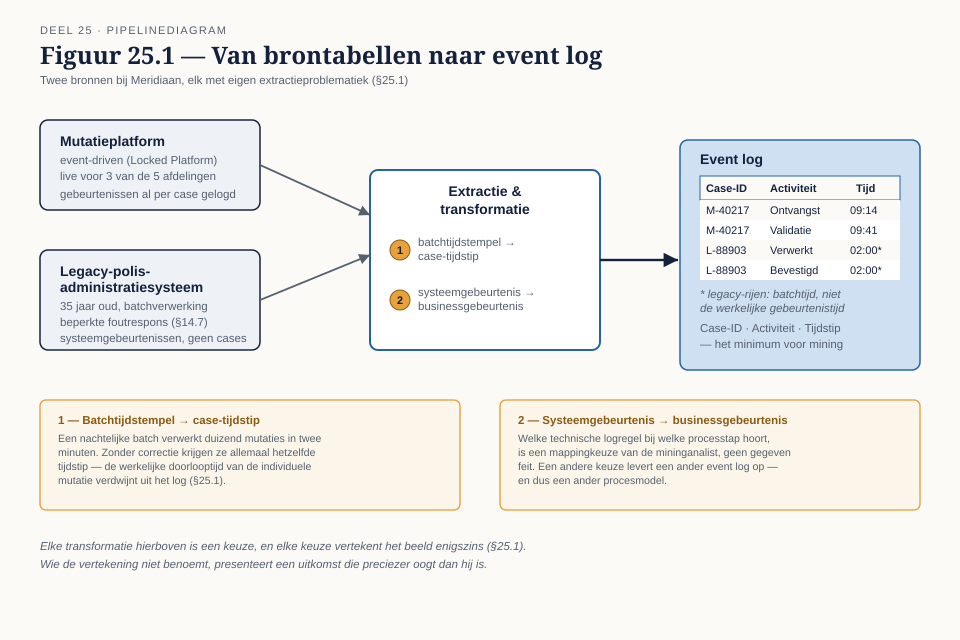
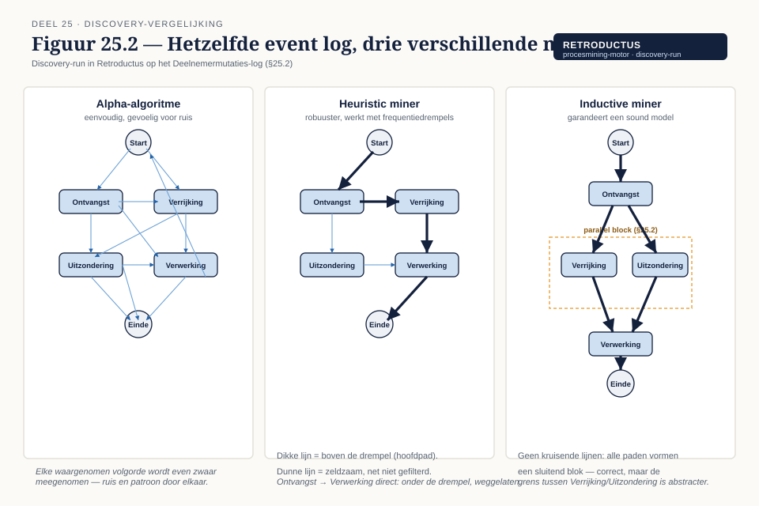
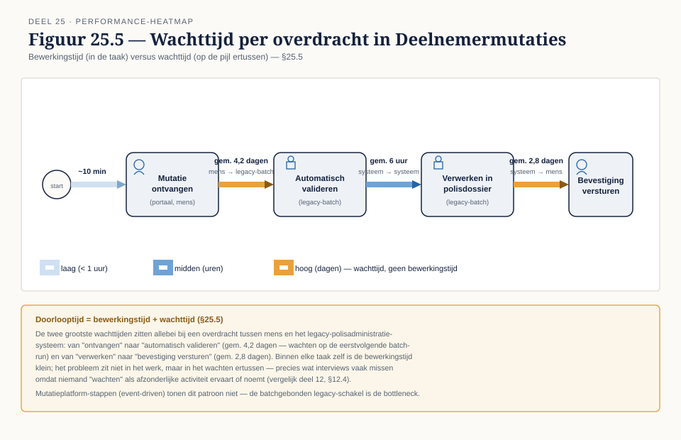

Cursus BPMN, CMMN & DMN · Niveau 3 (Meesterschap) · Deel 25 van 30
Procesmining verdiept
Dit deel wordt ook los aangeboden als vervolgmodule, samen met deel 20 als tweedaagse procesmining-cursus. Bij de tweedaagse variant slaat de docent dit blok over.
15secties
±7ustudielast
8werkboekopdrachten
6figuren
Positionering. Dit materiaal bereidt voor op het examen OCEB 2 Business Advanced van de Object Management Group en, waar van toepassing, op de CBPP-certificering van ABPMP. Het is geen vervanging van het officiële examenmateriaal.
Niveau 3: ① Enterprise-procesarchitectuur → ② Referentiemodellen en sectorstandaarden → ③ Procesmining verdiept (hier) → ④ Compliance, risk en control in modellen → ⑤ Beslisautomatisering op schaal → ⑥ Adaptive case management en kenniswerk → ⑦ Transformatie leiden → ⑧ Masterproef
01
Opfrisblok — sla dit over als je deel 20 al hebt gevolgd
Sectie 1 van 15
Dit deel wordt ook los aangeboden als vervolgmodule, samen met deel 20 als tweedaagse procesmining-cursus. Bij de tweedaagse variant slaat de docent dit blok over.
Een event log is een geordende verzameling gebeurtenissen; elke gebeurtenis bevat minimaal een case-ID, een activiteitnaam en een tijdstip. Conformance checking legt een event log naast een procesmodel en toont waar de werkelijkheid van het model afwijkt. Bij elke afwijking zijn er drie mogelijke verklaringen: het model is verouderd, de werkelijkheid loopt fout, of er is een derde verklaring die pas bij nader onderzoek zichtbaar wordt (niveau 2, deel 20, §20.5). Wie deel 20 volledig gevolgd heeft, kent dit al — ga direct door naar de leerdoelen.
02
Leerdoelen
Sectie 2 van 15
Na dit deel kun je:
Een event log extraheren uit een legacy-omgeving en de beperkingen daarvan beoordelen.
Discovery-algoritmen op hoofdlijnen begrijpen en de output kritisch lezen.
Een simulatie opzetten en de grenzen van de aannames benoemen.
Mining-uitkomsten vertalen naar een investeringsafweging.
03
Van conformance naar diepte
Sectie 3 van 15
Deel 20 beantwoordde één vraag: klopt dit model met de werkelijkheid? Dit deel gaat verder dan die ene vraag — het behandelt hoe je aan een log komt als de bron notoir onbetrouwbaar is (het legacy-polisadministratiesysteem), hoe je discovery-uitkomsten kritisch leest in plaats van klakkeloos aanneemt, en hoe je van een mining-bevinding naar een onderbouwd investeringsvoorstel komt — precies wat de nulmeting voor het Programma Stelselovergang nodig heeft.
04
Van bron naar log
Sectie 4 van 15
Bij Meridiaan zit de procesdata deels in het Mutatieplatform (voor de drie gemigreerde afdelingen) en deels in het legacy-polisadministratiesysteem (35 jaar oud, batchverwerking, deel 14 §14.7). Een event log extraheren uit het laatste vraagt transformaties: batchtijdstempels moeten worden herleid tot iets dat op een individuele case-gebeurtenis lijkt, en systeemgebeurtenissen (wat het systeem logt) moeten worden vertaald naar businessgebeurtenissen (wat een modelleur als processtap herkent).
De vertekening die je introduceert. Elke transformatie is een keuze, en elke keuze vertekent het beeld enigszins — een batchverwerking die 's nachts duizend mutaties in twee minuten verwerkt, levert een tijdstempel op die niets zegt over de werkelijke doorlooptijd van een individuele mutatie tenzij je expliciet corrigeert. Wie deze vertekening niet benoemt, presenteert een mining-uitkomst die preciezer oogt dan hij is.
05
Discovery-algoritmen
Sectie 5 van 15
Discovery leidt een procesmodel af uit een event log, zonder dat er vooraf een referentiemodel nodig is. De bekendste algoritmen: het alpha-algoritme (eenvoudig, gevoelig voor ruis), de heuristic miner (robuuster tegen ruis, werkt met frequentiedrempels) en de inductive miner (garandeert een correct, "sound" procesmodel als output, ten koste van soms grovere abstractie).
Waarom hetzelfde log verschillende modellen oplevert. Elk algoritme maakt eigen aannames over wat "representatief gedrag" is en hoe het met zeldzame paden omgaat. Een log met veel uitzonderingsgedrag levert bij de heuristic miner een ander model op dan bij de inductive miner — geen van beide is per definitie fout, ze beantwoorden de vraag "wat is het proces" met een andere afweging tussen precisie en generaliteit.
06
De output kritisch lezen
Sectie 6 van 15
Een discovery-run op een ruwe log levert vaak een spaghettimodel op: een kluwen van paden die onleesbaar is. De reflex is filteren — zeldzame paden weglaten tot het plaatje overzichtelijk wordt.
De verleiding om te filteren tot het plaatje mooi is. Filteren is nodig en legitiem tot op zekere hoogte: ruis (fouten, incidentele afwijkingen) hoort er inderdaad uit. Maar de grens tussen ruis wegfilteren en ongemakkelijke werkelijkheid wegfilteren is dun, en de verleiding om net iets verder te filteren dan verdedigbaar is — tot het model past bij wat je al dacht — is reëel en zelden opzettelijk kwaadaardig. Het is de meest verleidelijke vorm van onbedoeld bedrog in dit vak.
07
Variantenanalyse
Sectie 7 van 15
Een variant is een unieke volgorde van activiteiten die daadwerkelijk voorkomt in het event log. Een proces met honderd cases kan tien varianten kennen, of vijftig — en dat aantal zegt direct iets over hoe gestandaardiseerd het proces in de praktijk werkelijk is, los van wat het procesmodel suggereert.
De lange staart. Doorgaans dekken enkele varianten het merendeel van de gevallen (vaak in de orde van 80%), terwijl een lange staart van zeldzame varianten de rest verklaart. Die lange staart is waardevolle informatie voor een standaardisatieambitie: hoeveel van die zeldzame varianten zijn incidentele fouten, en hoeveel zijn legitieme uitzonderingsafhandeling die niet zomaar wegontworpen kan worden? Een standaardisatieambitie die de lange staart negeert, belooft meer dan hij kan waarmaken.
08
Performance-analyse
Sectie 8 van 15
Doorlooptijd (van start tot einde van een case) is iets anders dan bewerkingstijd (de tijd die daadwerkelijk aan het werk wordt besteed) — het verschil ertussen is wachttijd, en wachttijd zit doorgaans bij de overdracht tussen afdelingen of tussen mens en systeem.
Bottleneckdetectie op basis van data. Deel 12, §12.4 behandelde knelpuntanalyse op basis van interviews — nuttig, maar gekleurd door wie je spreekt en wat opvalt in het geheugen. Performance-analyse op basis van mining-data toont bottlenecks die niemand expliciet had genoemd, en bevestigt of ontkracht bottlenecks die wél genoemd waren. De twee methoden zijn complementair: interviews geven verklaringen, data geeft de omvang.
09
Simulatie
Sectie 9 van 15
Een simulatie bouwt op een gemined procesmodel voort om scenario's door te rekenen — bijvoorbeeld: wat gebeurt er met de doorlooptijd als de capaciteit van een team met 20% daalt tijdens de stelselovergang?
Wat de aannames waard zijn. Een simulatie is precies zo goed als de aannames erin: verdeling van aankomsttijden, capaciteit per rol, prioriteringsregels. Elke aanname die niet expliciet wordt benoemd, is een onzichtbare bepalende factor in de uitkomst.
Schijnzekerheid. Een simulatie met een precieze uitkomst (bijvoorbeeld: "doorlooptijd stijgt met 14%") oogt gezaghebbender dan een grove schatting, ook als de onderliggende aannames net zo onzeker zijn als bij de grove schatting. De precisie van het getal zegt niets over de betrouwbaarheid ervan — dit is hetzelfde probleem als de schijnzekerheid uit deel 23, §23.3, nu toegepast op een dynamisch model in plaats van een statische keten.
10
Van bevinding naar investeringsafweging
Sectie 10 van 15
Een mining-bevinding ("hier zit een bottleneck") is geen investeringsvoorstel. De stap ernaartoe vraagt: wat kost het om het op te lossen, wat levert oplossen op (in doorlooptijd, in capaciteit, in risicoreductie voor de stelselovergang), en hoe groot is de onzekerheidsmarge rond beide schattingen? Een voorstel dat de onzekerheid verzwijgt, is makkelijker te schrijven en moeilijker te verdedigen zodra iemand doorvraagt — precies het soort verdedigbaarheid dat niveau 3 als geheel toetst.
11
Kernbegrippen
Sectie 11 van 15
Event log, conformance checking — opgefrist hierboven · Discovery — alpha, heuristic, inductive miner · Spaghettimodel en filteren — de grens tussen verhelderen en verbergen · Variant, lange staart — hoe gestandaardiseerd een proces werkelijk is · Doorlooptijd versus bewerkingstijd — waar wachttijd zit · Simulatie — aannames en de schijnzekerheid van precisie · Investeringsafweging — kosten, baten, onzekerheidsmarge
12
Examenrelevantie
Sectie 12 van 15
Niet direct examenstof voor OCEB 2 of CBPP als apart onderdeel; wel de kern van de praktijkcomponent van CBPP en direct bruikbaar in de masterproef (deel 30), waar een mining-onderbouwde nulmeting onderdeel is van het op te leveren transformatieontwerp.
13
Leeswijzer
Sectie 13 van 15
Voor de theoretische achtergrond van discovery-algoritmen: de standaardliteratuur over procesmining (Van der Aalst). Voor de praktische bediening van Retroductus: de platformdocumentatie, niet deze reader.
14
Figurenlijst
Sectie 14 van 15

Figuur 25.1 — Van brontabellen (Mutatieplatform en legacy-polisadministratiesysteem) naar event log, met de geïntroduceerde vertekening gemarkeerd.

Figuur 25.2 — Hetzelfde log door drie algoritmen, drie verschillende modellen.Figuur 25.3 — Filterniveaus: van spaghettimodel naar een model dat te schoon is om waar te zijn.Figuur 25.4 — Variantenanalyse met de lange staart zichtbaar gemaakt.

Figuur 25.5 — Performance-heatmap op een procesmodel, met wachttijd per overdracht.Figuur 25.6 — Een simulatie-uitkomst met onzekerheidsbandbreedte in plaats van één getal.
15
Werkboek — opdrachten
Sectie 15 van 15
Werk de opdrachten in volgorde. Opdracht 1 individueel in Retroductus, opdracht 2 individueel in Retroductus, opdracht 3 individueel in Retroductus, opdracht 4 (kerndeliverable) individueel, opdracht 5 in tweetallen, opdracht 6 (deliverable) individueel, opdracht 7 plenair. Twee dagdelen van 3,5 uur, met een aanzienlijk deel praktisch werk in Retroductus.
Werkboekopdrachten
Uit Werkboek deel 25, letterlijk overgenomen — geen modelantwoorden ingevuld, dit is klassikaal/individueel werk
Opdracht 1 — Log-extractie ontwerpen(deliverable)
Ontwerp voor het legacy-polisadministratiesysteem de extractie van een event log: welke tabellen gebruik je, welke transformaties zijn nodig, en welke vertekening accepteer je daarbij bewust (§25.1)? Maximaal twee pagina's.
Opdracht 2 — Twee algoritmen, één log
Draai twee discovery-varianten in Retroductus op dezelfde log en verklaar het verschil tussen de twee resulterende modellen aan de hand van §25.2.
Opdracht 3 — Filter met mate
Bekijk dezelfde log op drie filterniveaus (laag, gemiddeld, hoog). Documenteer per niveau: verheldert dit, of verbergt dit? Noteer het punt waarop je je voor het eerst ongemakkelijk voelt bij je eigen filterkeuze.
Opdracht 4 — Variantenanalyse(kerndeliverable)
Hoeveel varianten kent het proces Deelnemermutaties werkelijk? Welk percentage van de gevallen dekken de meest voorkomende varianten, en wat betekent de lange staart voor een realistische standaardisatieambitie binnen het Programma Stelselovergang? Maximaal drie pagina's.
Opdracht 5 — Simulatie(tweetallen)
Bouw een capaciteitsscenario voor de stelselovergangsperiode (bijvoorbeeld: een teamcapaciteit die tijdelijk daalt door opleiding op de nieuwe rekenregels). Benoem elke aanname expliciet, en beschrijf wat er met de uitkomst gebeurt als die aanname niet klopt.
Opdracht 6 — Investeringsafweging(deliverable)
Kies één bottleneck uit je performance-analyse. Formuleer één voorstel om hem te verhelpen, met kosten, baten en een expliciete onzekerheidsmarge rond beide.
Opdracht 7 — Stellingen(plenair)
Een simulatie met slechte aannames is gevaarlijker dan geen simulatie.
Filteren tot het plaatje mooi is, is de meest onschuldig ogende vorm van bedrog in dit vak.
Databewijs uit mining weegt zwaarder dan een interview — altijd.
Een investeringsvoorstel zonder onzekerheidsmarge is verkoop, geen analyse.
Vooruitblik
Deel 26 bouwt op deze nulmeting voort: compliance, risk en control in modellen, met de audit trail-specificatie als kerndeliverable. De datakwaliteitsproblemen die je in opdracht 1 en 3 tegenkwam, komen daar terug als aanleiding voor DNB's datakwaliteitseisen bij invaren.
Verder naar deel 26
Deel 26 — Compliance, risk en control in modellen — bouwt voort op wat hier is behandeld.